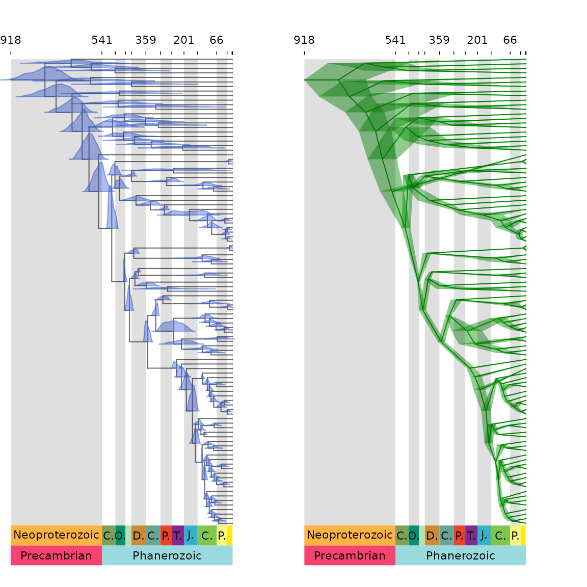

MCMCtreeR: plotting time trees
Mark Puttick
marknputtick@gmail.com
University of Bath
26 August 2024
MCMCtree_plot.Rmd
This guide demonstrates the MCMC.tree.plot function that
plots time trees output from divergence time analysis using the
molecular (or morphological) clock. MCMC.tree.plot includes
options to plot the Bayesian HPD age distribution for each node as node
bars or the full distribution, and also includes arguments to plot a
geological and/or absolute timescale.
MCMC.tree.plot can take any timescaled tree from any
software as long as it is read into R in APE format. The
function contains methods to read in and summarise posterior age
estimates for analyses from MrBayes, RevBayes, and MCMCtree.
However any tree and uncertainty can be plotted the
phylogeny and posterior age estimates are given as arguments to the
function.
Installation
The data in these examples are taken from an MCMCtree divergence time
analysis. Morris
et al 2018. From the MCMCtreeR package, users
can directly call (using the data function) the object
MCMCtree.output that contains a phylogeny output from
MCMCtree MCMCtree.phy and a full posterior output from the
analysis MCMCtree.posterior.
if (!any(rownames(installed.packages()) == "MCMCtreeR")) install.packages("MCMCtreeR")
library(MCMCtreeR, quietly = TRUE, warn.conflicts = FALSE)
data(MCMCtree.output)
attach(MCMCtree.output)
names(MCMCtree.output)## [1] "MCMCtree.phy" "MCMCtree.posterior"
phy <- readMCMCtree(MCMCtree.phy, from.file = FALSE)Plot geological and absolute ages on plot
For all plot types, MCMC.tree.plot includes options to
incorporate absolute and geological timescales on the tree figure. For
example, in Figure 1 the geologic times Eon and Period are displayed at
the bottom of the tree, with absolute ages in millions of years before
present at the top. The plotting of absolute timescales is controlled by
setting the add.time.scale option to TRUE (the
default). The absolute ages that are included reflect the designations
marked by the geologic time periods scale res argument. So
here absolute ages are shown for each Period at the top of the plot. As
grey.bars is TRUE shading is also used to
delimit each geologic Period.
MCMC.tree.plot(phy, cex.tips = 0.2, time.correction = 100, scale.res = c("Eon",
"Period"), plot.type = "phylogram", cex.age = 0.6, cex.labels = 0.6,
relative.height = 0.08, col.tree = "grey40", label.offset = 4,
node.method = "none", no.margin = TRUE)Figure 1 Phylogeny with posterior distributions of age on nodes and timescale
In Figure 2, the same plot is shown with scale res set
to show all geological age options (Eon, Period, Epoch, Age), which
looks too busy for this tree as it spans > 900 million years, but may
be better for other trees that span smaller time frames.
MCMC.tree.plot(phy, cex.tips = 0.2, time.correction = 100, scale.res = c("Eon",
"Period", "Epoch", "Age"), plot.type = "phylogram", cex.age = 0.4,
cex.labels = 0.5, relative.height = 0.08, col.tree = "grey40",
label.offset = 4, node.method = "none", no.margin = TRUE)Figure 2 Phylogeny with posterior distributions of age on nodes and timescale showing all units
Plot node uncertainty
Timescaled phylogenies can be plotted as the default ‘phylogram’
type. On these phylogenies uncertainty can be plotted as node bars,
similar to those used in FigTree. Note the argument
time.correction is used to rescale the MCMCtree ages to
absolute time by multiplying all ages by 100. In Figure 3, uncertainty
is presented using bars to highight the upper and lower Highest
Posterior Density of each age.
MCMC.tree.plot(phy, analysis.type = "MCMCtree", cex.tips = 0.2,
time.correction = 100, plot.type = "phylogram", lwd.bar = 2,
scale.res = c("Eon", "Period"), node.method = "bar", col.age = "navy",
no.margin = TRUE, label.offset = 4)Figure 3 Phylogeny with age uncertainty displayed as bars on nodes.
In this example (Figure 4), the age range of uncertainty for bars are
spread across the vertical height of each node using the option
node.length.
MCMC.tree.plot(phy, analysis.type = "MCMCtree", cex.tips = 0.2,
time.correction = 100, plot.type = "phylogram", lwd.bar = 2,
scale.res = c("Eon", "Period"), node.method = "node.length",
col.age = "#008b0040", no.margin = TRUE, label.offset = 4)Figure 4 Phylogeny with age uncertainty displayed spanning the vertical height of the node.
Finally, bars can be displayed across the entire vertical range of the plot. This is useful if one node age is of particular interest, such as in Figure 4 in which the age uncertainty (HPD interval) for node 110 (embryophytes) is highlighted alone.
MCMC.tree.plot(phy, analysis.type = "MCMCtree", cex.tips = 0.2,
time.correction = 100, plot.type = "phylogram", lwd.bar = 2,
scale.res = c("Eon", "Period"), node.method = "full.length",
all.nodes = 110, col.age = "#ff000040", no.margin = TRUE,
label.offset = 4)Figure 5 Phylogeny with age uncertainty of one node spanning the height of the phylogeny.
Mrbayes
The above examples were for MCMCtree analyses, these plots can also
be produced for MrBayes trees. Here no tree object is provided but the
full directory to the tree file is provided for the
directory.files argument. This is then read in and plotted
by the function.
# directory.mb <- '/User/MrBayes/output.nex.con.tre'
# MCMC.tree.plot(analysis.type='mrbayes',
# directory.files=directory.mb, cex.tips=0.33,
# plot.type='phylogram', lwd.bar=2, add.time.scale=FALSE,
# node.method='bar', col.age='navy')RevBayes
RevBayes trees can read in the same way as MrBayes trees.
# directory.rb <- '/User/RevBayes/output.nex.con.tre'
# MCMC.tree.plot(analysis.type='revbayes',
# directory.files=directory.rb, cex.tips=0.33,
# plot.type='phylogram', lwd.bar=2, add.time.scale=FALSE,
# node.method='bar', col.age='navy')Cladogram
Cladogram trees can be plot for output from MCMCtree analysis. In Figure 6, the ‘MCMCtree’ node uncertainty is summarised using phylogenetic cladogram plot in which with HPD age uncertainty spans the entire branch length.
MCMC.tree.plot(phy, analysis.type = "MCMCtree", cex.tips = 0.2,
time.correction = 100, plot.type = "cladogram", lwd.bar = 2,
scale.res = c("Eon", "Period"), node.method = "node.length",
col.age = "#008b0080", no.margin = TRUE, cex.labels = 0.5)Figure 6 Cladogram plot
Plot full distribution on nodes
If the full posterior is supplied as well as the tree, the
plot.type argument can be set to distributions
to display the full distribution of age estimates for each node of the
plot. In Figure 7, the full sample of ages is displayed for every node
on the phylogeny.
MCMC.tree.plot(phy, MCMC.chain = MCMCtree.posterior, cex.tips = 0.2,
time.correction = 100, plot.type = "distributions", cex.age = 0.4,
cex.labels = 0.5, relative.height = 0.08, col.tree = "grey40",
scale.res = c("Eon", "Period"), no.margin = TRUE, label.offset = 4,
density.col = "#00000050", density.border.col = "#00000080")Figure 7 Phylogeny with posterior distributions of age on nodes.
The colour of the node distributions is set using
density.col and density.border.col. Some nodes
can be given different colours. In Figure 8, the root node here is
coloured red and all other nodes are blue.
node.colours <- rep("#ff008050", Nnode(phy$apePhy))
node.colours.border <- rep("#ff008090", Nnode(phy$apePhy))
node.colours[1] <- "#00008050"
node.colours.border[1] <- "#00008090"
MCMC.tree.plot(phy, MCMC.chain = MCMCtree.posterior, cex.tips = 0.2,
time.correction = 100, scale.res = c("Eon", "Period"), plot.type = "distributions",
cex.age = 0.4, cex.labels = 0.5, relative.height = 0.08,
col.tree = "grey40", col.age = "black", density.col = node.colours,
density.border.col = node.colours.border, grey.bars = TRUE,
no.margin = TRUE)Figure 8 Phylogeny with posterior distributions of age on nodes, with the root a different colour.
Plot tree and timescale from any software
Using the ‘user’ option in the argument analysis.type it
is possible to plot trees, timescales, and age uncertainty, with files
output from any software.
The function only needs to be provided with a time-scaled phylogeny,
and the full posterior age estimates for each node. This user input
information is provided as a list to the argument
node.ages.
For this example, we are using the MCMCtree output, but the process
should be applicable to any divergence time software output. The
MCMC.tree.plot function requires that the object
node.ages is organised so the each element contains the
full age posterior for each node, and this element is allocated a name
that match the labels APE tree$edge object. The first element in the
list supplied to node.ages is the root node.
Here the ‘user’ approach is set-up step-by-step. First we store the
tree in APE format as a new object, and also create a new object for the
phy$edge object which summarises the tree structure in the
APE matrix format. Finally the MCMC chain is stored as a new object. For
the purposes of these examples, we use a subset of the phylogeny the
descends from node 177.
data(MCMCtree.output)## Warning in data(MCMCtree.output): data set 'MCMCtree.output' not found
attach(MCMCtree.output)## The following objects are masked from MCMCtree.output (pos = 3):
##
## MCMCtree.phy, MCMCtree.posterior## The following objects are masked from MCMCtree.output (pos = 4):
##
## MCMCtree.phy, MCMCtree.posterior
phy <- readMCMCtree(MCMCtree.phy, from.file = FALSE)
phy <- phy$apePhy
# Here a smaller tree is shown as an example.
phy.small <- extract.clade(phy, 177)
plot(phy.small, no.margin = TRUE, cex = 0.6)
# view nodelabels on the tree
nodelabels(cex = 1)Figure 9 Phylogeny showing the node and tip labels.
This tree plot in Figure 9 shows the timescaled phylogeny. On this plot the blue squares correspond to internal node labels. The input needs a list with each element containing the ages from the appropriate node (Figure 9).
Here the list is constructing and each element name is assigned with the corresponding node value, and these are filled with random ages from a normal distribution. In a real example this would be subsituted with real data.
node.numbers <- c(9, 10, 11, 12, 13, 14, 15)
# create a list to store each posterior sample for every
# node
node.posteriors <- vector(mode = "list", length = Nnode(phy.small))
names(node.posteriors) <- node.numbers
for (i in 1:Nnode(phy.small)) node.posteriors[[i]] <- rnorm(1000,
mean = branching.times(phy.small)[i], sd = 0.1)
## substitute the random numbers with the appropriate
## posterior distribution for that node e.g.,
## your.age.values <-
## read.csv('posterior.ages.from.an.analysis') for(i in
## 1:Nnode(phy.small)) node.posteriors[[i]] <-
## your.age.valuesThese data can now be displayed using the MCMC.tree.plot
function (Figure 10) in which the node.posteriors are provided to the
function as a list using the node.ages argument.
MCMC.tree.plot(phy = phy.small, node.ages = node.posteriors,
analysis.type = "user", cex.tips = 0.7, time.correction = 100,
scale.res = c("Eon", "Period"), plot.type = "distributions",
cex.age = 0.7, cex.labels = 0.5, relative.height = 0.08,
col.tree = "grey40", no.margin = TRUE)Figure 10 Phylogeny showing the node and tip labels.
This is a second example in which we use real data from an MCMCtree
analysus. Again, the names of the list elements storing the posterior
age arguments need match the nodelabels from the APE tree. As above, a
good way to investigate this is to plot trees and then using the
nodelabels() function to visualise how the nodelabels are
found on the tree.
In the MCMCtree output file, node ages are stored in the second column onwards. So we extract these data and then remove the ‘t_n’ label from each column header so we are left with just the node numbers. And then we sort the node numbers from MCMCtree analysis so that they match the node labels in the APE format.
# Not run. Plot tree with node labels to help work out how
# labels correspond to tree from software output.
# plot(ape) nodelabels() extract the MCMC chain and the
# phylogeny edge object
MCMC.chain <- MCMCtree.posterior
phy.edge <- phy$edge
# extract ages with node age posteriors from column 2
MCMC.node.ages <- MCMC.chain[, 2:Ntip(phy)]
# extract the names from these data so they are numeric
# node labels that match the APE tree format
all.nodes <- as.numeric(gsub("t_n", "", colnames(MCMC.node.ages)))
# create a vector of names for each list element as
# internal nodes from APE tree, using phy$edge object.
node.ages.names <- c(Ntip(phy) + 1, phy.edge[which(phy.edge[,
2] > Ntip(phy)), 2])
# find where each posterior node age appears in APE edge
# object.
match.nodes <- match(all.nodes, as.numeric(node.ages.names))
# create a list extracting the information from the MCMC
# chain in APE node order.
node.ages <- lapply(match.nodes, function(uu) MCMC.node.ages[,
uu])
# name each element in list.
names(node.ages) <- node.ages.namesThe node.ages object is input to
MCMC.tree.plot with the argument analysis.type
set to ‘user’ to plot the timescaled tree and full distributions on each
node (Figure 11).
MCMC.tree.plot(phy = phy, node.ages = node.ages, analysis.type = "user",
cex.tips = 0.2, time.correction = 100, scale.res = c("Eon",
"Period"), plot.type = "distributions", cex.age = 0.4,
cex.labels = 0.5, relative.height = 0.08, col.tree = "grey40",
no.margin = TRUE)Figure 11 Phylogeny plotted with user-formatted data.
References
- Morris JL, Puttick MN, Clark JW, Edwards, Kenrick PD, Pressel S, Wellman CH, Yang Z, Schneider H, and Donoghue PCJ. 2018. The timescale of early land plant evolution. Proceedings of the National Academy of Sciences USA. (https://doi.org/10.1073/pnas.1719588115)